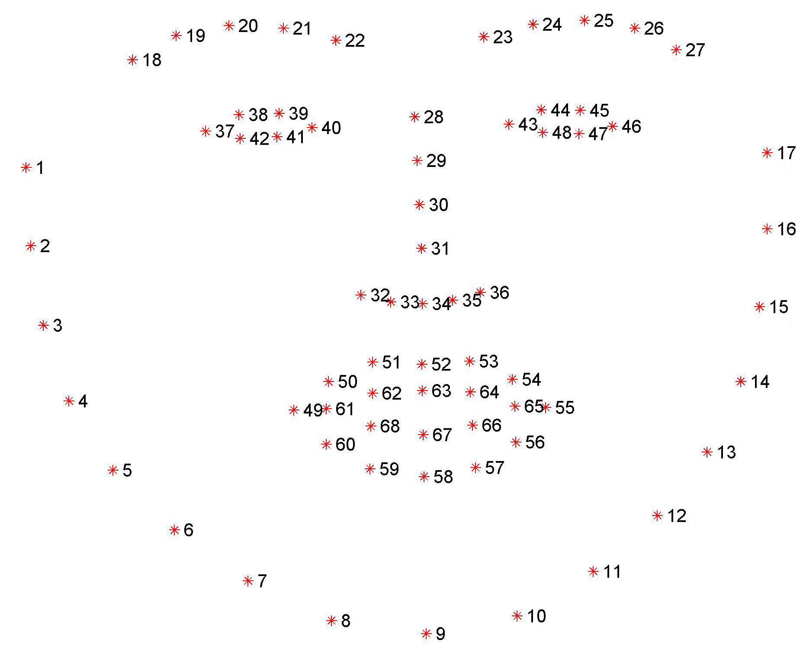

FACEMETA - Dataset for Hominological Facial Image Metadata
FACEMETA is the largest commercially available dataset of facial images with detailed metadata.
The FACEMETA dataset is intended for use in scientific research. It contains 255,555 high-resolution standardized photographs of male and female faces of varying ethnicity between the ages of 17-65. Extensive data processing are available for each individual model. These data include both physical attributes as well facial feature encodings.
Overview
The metadata for face images include descriptors such as: race, gender, age, height, weight, and eye color, date picture taken. Additionally, pre-processing is available to speed up deep learning projects, including standardization of aspect ratio, image size, image alignment, tilt, noise reduction, standardized field of view, 128 feature points, and image encoding.
This dataset’s images are pre-processed and ready for modeling. Use cases include:
Age/Health prediction
ID matching
Psychology studies
Facial expression analysis
Face generation
Sexual orientation
Life span
Methodology
Face are standardized and normalize to correct for orientation. Facial landmarks are used to localize and represent salient regions of the face, such as eyes, eyebrows, nose, mouth, and jawline. Facial landmark were extracted in two step: first, through localization of the face in the image (pre-trained HOG + Linear SVM object detectors), then detecting the key facial structures on the face ROI using ensemble forest (see: One Millisecond Face Alignment with an Ensemble of Regression Trees). The pre-trained facial landmark detector estimates the location of 68 (x, y) coordinates that map to facial structures on the face.

About
We are a collective of data scientists researching computer vision within psychology, sociology, behavioural economics, and other research fields. FACEDATA addresses common challenges we’ve faced in procuring and preparing data within our research.
Purchase
FACEMETA is available to be purchased for commercial and academic purposes. The dataset has tiered pricing options by volume and pre-processing.
To get started, enter your commercial email below. You’ll be provided with (i) a free sample of 100 images and metadata to ensure the dataset meets your needs, (ii) a 'Getting Started' guide, and (ii) purchase options to download the full dataset.